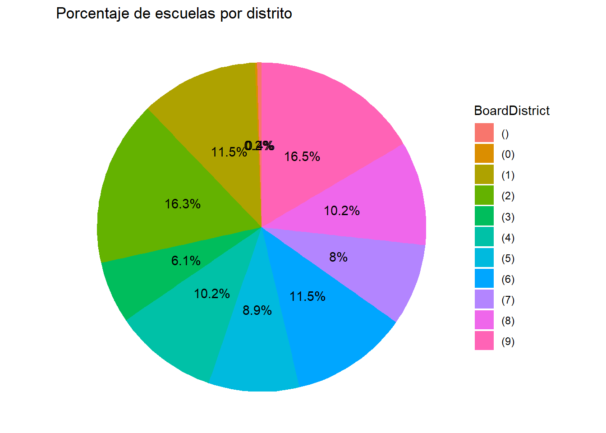

library(tidyverse) # incluye ggplot2
library(readxl) # funciones para importar xlsx
library(janitor) # funciones de limpieza
library(patchwork) #combinar gráficos de ggplot
library(ggExtra)
library(ggthemes) # nuevas temas para los
library(plotly) #gráficos interactivos # remotes::install_github("plotly/plotly")
library(tibble)
library(skimr) # reseumen numerico
library(modeest)
library(ggrepel) # añadir etiquetas a los gráficos
library(RColorBrewer) #paletas de colores
library(plotly) #graficos interactivos5 Gráficos de Pastel
5.1 Cargar librerias
Librerias necesarias que se deben haber instalado previamente con install.packages(nombre del paquete) o el panel Package.
5.2 Carga de datos
Se utilizará los datos de estudio de lectura y matematica de las escuelas de Miami en 2012 y 2013 por grado y Distrito llamado SchoolsMiamiDade.
Significado de las variables:
SchoolName : Nombre de la Escuela
BoardDistrict : Núemero de Dsitrito donde esta la escuela
SchoolGrade : Grado al que se le aplico la prueba
Reading2012 : puntaje de 1 a 100 en Lectura 2012
Reading2013: puntaje de 1 a 100 en Lectura 2013
ReadingDifference: diferencia entre 2013 y 2012 en lectura
Math2012: puntaje de 1 a 100 en Matemática 2012
Math2013: puntaje de 1 a 100 en Matemática 2013
MathDifference: diferencia entre 2013 y 2012 en matemática
SchoolsMiamiDade<- read.csv("data/SchoolsMiamiDade.csv")
SchoolsMiamiDade <- as_tibble(SchoolsMiamiDade)
head(SchoolsMiamiDade,5)# A tibble: 5 × 9
SchoolName BoardDistrict SchoolGrade Reading2012 Reading2013 ReadingDifference
<chr> <chr> <chr> <int> <int> <int>
1 0041 AIR … (9) A 82 80 -2
2 0070 CORA… (9) A 71 73 2
3 0071 EUGE… (5) A 69 69 0
4 0072 SUMM… (9) B 57 50 -7
5 0073 MAND… (9) C 34 32 -2
# ℹ 3 more variables: Math2012 <int>, Math2013 <int>, MathDifference <int># Verificar tipos de datos
SchoolsMiamiDade |>
glimpse()Rows: 460
Columns: 9
$ SchoolName <chr> "0041 AIR BASE ELEMENTAR", "0070 CORAL REEF MONT AC"…
$ BoardDistrict <chr> "(9)", "(9)", "(5)", "(9)", "(9)", "(2)", "(4)", "(3…
$ SchoolGrade <chr> "A", "A", "A", "B", "C", "F", "A", "A", "A", "C", "D…
$ Reading2012 <int> 82, 71, 69, 57, 34, 28, 68, 73, 68, 39, 38, 45, 53, …
$ Reading2013 <int> 80, 73, 69, 50, 32, 29, 70, 72, 68, 32, 41, 35, 51, …
$ ReadingDifference <int> -2, 2, 0, -7, -2, 1, 2, -1, 0, -7, 3, -10, -2, -1, -…
$ Math2012 <int> 71, 64, 66, 50, 38, 26, 68, 78, 73, 41, 43, 59, 56, …
$ Math2013 <int> 75, 56, 64, 54, 39, 47, 66, 77, 76, 39, 47, 50, 55, …
$ MathDifference <int> 4, -8, -2, 4, 1, 21, -2, -1, 3, -2, 4, -9, -1, -3, -…5.3 Gráficos de Pastel en R
Los gráficos de pastel, pie o circulares ayudan a mostrar proporciones y porcentajes entre categorías al dividir un círculo en segmentos proporcionales. Cada longitud de arco representa una proporción de cada categoría, mientras que el círculo completo representa el 100%.
Este tipo de gráficos son ideales para dar al lector una idea rápida de la distribución proporcional de los datos. Sin embargo tiene varias desventajas:
- No pueden mostrar muchos valores, porque a medida que aumenta el número de valores, el tamaño de cada segmento es más pequeño y dificil de interpretar.
- Ocupan más espacio que sus alternativas y la interpretación del gráfico no siempre es fácil de realizar, como el gráfico de barra.
- No son buenos para realizar comparaciones entre grupos de gráficos circulares.
El uso del Gráfico de Pastel puede ser un problema ya que las personas se les dificulta leer ángulos, por lo que al cerebro le cuesta interpretar el gráfico de forma rápida. El comentario no está relacionado ha no utilizarlo, sino a la idea de evaluar la necesidad de utilizarlo y tomar en cuenta recomendaciones de cuando utilizarlo.
5.4 Crear gráfico de Pastel en R
En ggplot no hay una geometría para realizar un gráfico de pastel, sin embargo, aunque el proceso de su creación resulte un poco tedioso, es una forma de entender de donde se deriva el gráfico de barra y su posible sustituto en algunos casos
Los pasos para hacer un gráfico de pastel son los siguientes:
5.4.1 Crear una tabla de datos ordenados
tb_distritos<- SchoolsMiamiDade |>
count(BoardDistrict) |>
arrange(desc(n))
tb_distritos_<- SchoolsMiamiDade |>
group_by(BoardDistrict, SchoolGrade) |>
summarise(n = n())`summarise()` has grouped output by 'BoardDistrict'. You can override using the
`.groups` argument.# Verificar tipos de datos
tb_distritos |>
glimpse()Rows: 11
Columns: 2
$ BoardDistrict <chr> "(9)", "(2)", "(1)", "(6)", "(4)", "(8)", "(5)", "(7)", …
$ n <int> 76, 75, 53, 53, 47, 47, 41, 37, 28, 2, 15.4.2 Transformar tabla a tibble (opcional)
El conjunto de datos a utilziar en el gráfico tambien puede ser un dataframe,
tb_distritos <- as_tibble(tb_distritos)
tb_distritos |>
glimpse()Rows: 11
Columns: 2
$ BoardDistrict <chr> "(9)", "(2)", "(1)", "(6)", "(4)", "(8)", "(5)", "(7)", …
$ n <int> 76, 75, 53, 53, 47, 47, 41, 37, 28, 2, 1# se generan dos variables una cuantitativa y una cualitativa
# La varibale cualitativa debe ser categorica tipo factor()
tb_distritos$BoardDistrict <- as.factor(tb_distritos$BoardDistrict)
tb_distritos |>
glimpse()Rows: 11
Columns: 2
$ BoardDistrict <fct> (9), (2), (1), (6), (4), (8), (5), (7), (3), (), (0)
$ n <int> 76, 75, 53, 53, 47, 47, 41, 37, 28, 2, 15.4.3 Crear gráfico de barra
Partimos creando un gráfico de barras con dos variables, x=““ que es la posición en X en el gráfico, pero que se coloca solo para poder generar una sola columna, y = n , muestran los calores cuantitativo del conteo de cada Distrito apilados, el valor de fill = BoardDistrict es una Variable categorica que genera el color de cada pila de la columna.
tb_distritos |>
ggplot(aes(x="", y= n, fill=BoardDistrict)) +
geom_col()#ejemplo circular - anillo
# Tamaño del agujero central
hsize <- 3.5
# Crear tamaño del agujero del anillo en el tibble
tb_distritos <- tb_distritos |>
mutate(x = hsize)
tb_distritos[c(2,3),] |>
ggplot(aes(x=hsize, y= n, fill=BoardDistrict)) +
geom_col() +
coord_polar("y", start=0) +
xlim(c(0.2, hsize+0.5))# otra tabla
tb_distritos_ |>
ggplot(aes(x=hsize, y= n, fill=BoardDistrict)) +
geom_col() +
coord_polar("y", start=0) +
xlim(c(0.2, hsize+0.5))
5.4.4 Añadir coordenadas polares al gráfico
Una vez creado el gráfico de barras, generamos la forma circular utilizando coordenadas polares a través de la función coord_polar(“y”, start=0) , la cual debe inciar con el ángulo 0 y terminará en el ángulo 360..
tb_distritos |>
ggplot(aes(x="", y= n, fill=BoardDistrict)) +
geom_col()+
coord_polar("y", start=0) 5.4.5 Añadimos los datos al grafico
Con la geometria geom_text() añadimos los textos de cada variable n y ajustamos la posición de los datos con vjust().
tb_distritos |>
ggplot(aes(x="", y= n, fill=BoardDistrict)) +
geom_col()+
coord_polar("y", start=0) +
geom_text(aes(label =n),position = position_stack(vjust = 0.5)) 5.4.6 Eliminamos elementos generados de las coordenadas polares
Con la función theme_void() eliminamos los componentes visuales generados por las coordenadas polares, que no aportan nada al gráfico.
tb_distritos |>
ggplot(aes(x="", y= n, fill=BoardDistrict)) +
geom_col()+
coord_polar("y", start=0) +
geom_text(aes(label =n),position = position_stack(vjust = 0.5)) +
theme_void()
tb_distritos |>
ggplot(aes(x="", y= n, fill=BoardDistrict)) +
geom_col()+
coord_polar("y", start=0) +
geom_text(aes(label =n),position = position_stack(vjust = 0.5)) +
theme_void()
5.5 Gráfico de pastel con porcentaje
Para calcaluar el porcentaje de cada slide del gráfico de pastel se debe conocer el total de valores de la variable n, el cual calcularemos en la variable suma.
Este valor lo utilizaremos para dividir cada valor de la variaqble n y multiplicado por 100. Utilizamos la función round(), para redondear y usamos un solo digito decima. Creamos una nueva variable en el tibble llamado porcentaje la cual añadimos al tibble tb_distritos utilizando la función mutate().
#calcular variable porcentaje
suma <- sum(tb_distritos$n)
tb_distritos <- tb_distritos |>
mutate(porcentaje = round((n /suma) * 100,1))
# gráfico de pie
tb_distritos |>
ggplot(aes(x="", y= n, fill=BoardDistrict)) +
geom_col()+
coord_polar("y", start=0) +
geom_text(aes(label = paste0(porcentaje, "%")),
position = position_stack(vjust = 0.5)) +
theme_void()+
labs(title = "Porcentaje de escuelas por distrito") #opcional
5.6 Recomendaciones
5.6.1 recomendación 0
El objetivo de los gráficos es trasmitir información a través de este, no hay que adornar los datos, NO utilice efectos 3D en los gráficos, menos en el gráfico de pie, a las personas le cuestat interpretar ángulos, se hace más complicado añadir interpretar figuras en perspectiva.
5.6.2 Recomendación 1
Orden de los slide
Si bien las etiquetas de los datos se solapan, es un tema que veremos posteriormente.
El error común en los gráficos de pastel es que los pedazos del pastel o slide aveces no están en orden. Un gráfico de pastel debiera iniciar con el slide más grande en la posición 12 del reloj, seguido de los slide por orden de tamaño. En este caso aunque inicia en la posición 12 del reloj, es el slide de la posición 2 con el valor 10.2% el que esta de primero, y no debe estar en esa posición.
Para order los slide en el gráfico, debemos ordenar la variable categórica Board_district, uitilizando la función reorder() en esa variable, la cual ordenara la variable categorica BoardDistrict por el valor de n, el cual esta ordenado de mayor a menor.
tb_distritos |>
ggplot(aes(x="", y= n, fill= reorder(BoardDistrict,n))) +
geom_col()+
coord_polar("y", start=0) +
geom_text(aes(label = paste0(porcentaje, "%")),
position = position_stack(vjust = 0.5)) +
theme_void()+
labs(title = "Porcentaje de escuelas por distrito") #opcional
5.6.3 Recomendación 2
Número de slide en el gráfico de pastel
Según expertos en VIZ al utilizar un gráfico de pastel, es recomendable que el número de slide no sea mayor a seis (6). En caso de ser así, se recomienda unir los valores más pequeños en un solo slide llamado otros / others.
En este ejemplo el número de slide del pie de escuela por distritos en USA, es de 11, así que trabajaremos en reducir este número a solo 6.
Nota: Esta es solo una RECOMENDACIÓN en la visualización de datos al utilizar gráfico de pie
# Crear nueva fila de valor "otros" seleccionando las filas
# de las 6 a la 11 para luego sumar los valores de n
n <- sum(tb_distritos$n[6:11])
suma <- sum(tb_distritos$n)
BoardDistrict <- "otros"
x <- round(n/suma *100,1)
# Creamos un dataframe con los valores calculados
other_row <- data.frame(BoardDistrict,n,x)
other_row$BoardDistrict <- as.factor(other_row$BoardDistrict)
# Crear nueva tabla con los seis valores seleccionados
# de los distritos con más escuelas, inlcuyendo "otros"
other_distritos <- tb_distritos[1:5,]
# other_distritos |>
# glimpse()
tb_distritos_ <- bind_rows(other_distritos, other_row)Gráfico de pastel con slide ordenados
tb_distritos_ |>
ggplot(aes(x="", y= n, fill= reorder(BoardDistrict,n))) +
geom_col()+
coord_polar("y", start=0) +
geom_text(aes(label = paste0(porcentaje, "%")),
position = position_stack(vjust = 0.5)) +
theme_void()+
labs(title = "Porcentaje de escuelas por distrito") #opcionalOrdenar slide según variable
El gráfico generado de los valores más altos, ahora coloca otros al inicio del gráfico, es debido a que contiene el porcentaje con mayorvalor que es 33.9%, sin embargo, al ser el slide de datos restante es recomendable que este al final del resto de los slide. Existen diferentes formas de ordenarlo, en este lo haremos creando una nueva variable llamada orden que contiene los valores del 1 al 6 (cantidad de slide) en el orden en que queremos aparezcan los slides.
# Crear varible orden con valores del 1 al 6
tb_distritos_$orden <- 1:6
# En lugar de ordenar la función reorden por la variable "n"
# lo haremos con la variable "orden"
tb_distritos_ |>
ggplot(aes(x="", y= n, fill= reorder(BoardDistrict,orden))) +
geom_col()+
coord_polar("y", start=0) +
geom_text(aes(label = paste0(porcentaje, "%")),
position = position_stack(vjust = 0.5)) +
theme_void()+
labs(title = "Porcentaje de escuelas por distrito") #opcionalInvertir orden de slide en según variable
El gráfico ha sido ordenado por la variable orden pero a iniciado en las posición de las 12 de la manecilla del reloj, pero, en sentido contario a las manecillas, para modificarlo, debemos decirle a la variable orden que invierta su orden amteponiendo el signo negativo (-) en esa variable -orden. De esa forma obtenemos el orden del gráfico.
# Invertir orden de los valores según la posición negativa
# de la variable "orden"
tb_distritos_ |>
ggplot(aes(x="", y= n, fill= reorder(BoardDistrict, -orden))) +
geom_col()+
coord_polar("y", start=0) +
geom_text(aes(label = paste0(porcentaje, "%")),
position = position_stack(vjust = 0.5)) +
theme_void()+
labs(title = "Porcentaje de escuelas por distrito") #opcional5.6.4 Recomendación 3
Colores no normalizados
Este error puede ser un poco relativo (diseñar es un arte, pero hay reglas), al utilizar la variable BoardDistrict en la propiedad fill en la estética de aes() de ggplot, este nos genera diversos colores por cada distrito, estos colores son un estandar de ggplot. El problema surge cuando creamos un gráfico con colores personalizados, sin contemplar que existes paletas de colores definidas.
A manera de ejemplo, crearemos un vector llamado colores, con diversos colores sin evaluar su combinación, los cuales se cargaran a traves de la función scale_fill_manual(values = colores).
colores <- c("#879541","#681221","#114588","#589785","#996677","#664199")
tb_distritos_ |>
ggplot(aes(x="", y= n, fill= reorder(BoardDistrict, -orden))) +
geom_col()+
coord_polar("y", start=0) +
geom_text(aes(label = paste0(porcentaje, "%")),
position = position_stack(vjust = 0.5),
size= 3.4) +
theme_void()+
labs(title = "Porcentaje de escuelas por distrito",
fill="Distritos") + #opcional
scale_fill_manual(values = colores)5.6.5 Paleta de colores personalizada
Existen diferentes tipo de paletas de colores en ggplot:
- Diverging: BrBG, PiYG, PRGn, PuOr, RdBu, RdGy, RdYlBu, RdYlGn, Spectral
- Qualitative: Accent, Dark2, Paired, Pastel1, Pastel2, Set1, Set2, Set3
- Sequential: Blues, BuGn, BuPu, GnBu, Greens, Greys, Oranges, OrRd, PuBu, PuBuGn, PuRd, Purples, RdPu, Reds, YlGn, YlGnBu, YlOrBr, YlOrRd
Mostrar paletas de colores
Colores divergentes
Utilizamos la paleta palette = “Spectral” en la función scale_fill_brewer.
tb_distritos_ |>
ggplot(aes(x="", y= n, fill= reorder(BoardDistrict, -orden))) +
geom_col()+
coord_polar("y", start=0) +
geom_text(aes(label = paste0(porcentaje, "%")),
position = position_stack(vjust = 0.5),
size= 3.4) +
theme_void()+
labs(title = "Porcentaje de escuelas por distrito",
fill="Distritos") + #opcional
scale_fill_brewer(palette = "Spectral")# display.brewer.all(colorblindFriendly = TRUE) # paleta de colores
# ?display.brewer.all(type="qual") # paleta de colores cualitativo
# brewer.pal(6,"Dark2") # paleta y numero de coloresColores sequenciales
Utilizamos la paleta palette = “Blues” en la función scale_fill_brewer.
tb_distritos_ |>
ggplot(aes(x="", y= n, fill= reorder(BoardDistrict, -orden))) +
geom_col()+
coord_polar("y", start=0) +
geom_text(aes(label = paste0(porcentaje, "%")),
position = position_stack(vjust = 0.5),
size= 3.4) +
theme_void()+
labs(title = "Porcentaje de escuelas por distrito",
fill="Distritos") + #opcional
scale_fill_brewer(palette = "Blues") Colores Cualitativos
Utilizamos la paleta palette = “Dark2” en la función scale_fill_brewer.
tb_distritos_ |>
ggplot(aes(x="", y= n, fill= reorder(BoardDistrict, -orden))) +
geom_col()+
coord_polar("y", start=0) +
geom_text(aes(label = paste0(porcentaje, "%")),
position = position_stack(vjust = 0.5),
size= 3.4) +
theme_void()+
labs(title = "Porcentaje de escuelas por distrito",
fill="Distritos") + #opcional
scale_fill_brewer(palette = "Dark2") 5.6.6 Modificar apariencia del gráfico
Antes de ver otra recomendación en los colores del gráfico, modificaremos algunos elementos al gráfico como, añadir el valor de x=1.6 en goem_text() para colocar los valores del texto fuera del gráfico. Utilizando guides(fill = guide_legend(reverse = TRUE)) podemos modificar el orden de los items de la leyenda.
tb_distritos_ |>
ggplot(aes(x="", y= n, fill= reorder(BoardDistrict, -orden))) +
geom_col()+
coord_polar("y", start=0) +
geom_text(aes(x=1.6,
label = paste0(porcentaje, "%")),
position = position_stack(vjust = 0.5),
size= 3.4) +
theme_void()+
labs(title = "Porcentaje de escuelas por distrito",
fill="Distritos") + #opcional
guides(fill = guide_legend(reverse = TRUE))Eliminar leyenda, añadir info a datos
Podemos añadir el nombre del distrito BoardDistrict en la etiqueta de cada slide.
Al crear esta información, la leyenda estaría de más por lo que la eliminaremos utilizando theme(legend.position=“none”).
tb_distritos_ |>
ggplot(aes(x="", y= n, fill= reorder(BoardDistrict, -orden))) +
geom_col()+
coord_polar("y", start=0) +
geom_text(aes(x=1.6,
label = paste0(BoardDistrict,"\n",porcentaje, "%")),
position = position_stack(vjust = 0.5),
size= 3.4) +
theme_void()+
labs(title = "Porcentaje de escuelas por distrito",
fill="Distritos") + #opcional
theme(legend.position="none") 5.6.7 Recomendación 4
Énfasis en un slide, resaltar slide con mayor porcentaje
Una de las recomendaciones al realizar visualizaciones es guiar al lector en el aspecto a resaltar del gráfico, ya sea que queramos resaltar el slide con mayor porcentaje o el slide con menor porcentaje. Para ello podemos hacer uso del color para resaltar el slide de interés.
# Crear paleta de colores secuancial gris
# brewer.pal permite capturar lista de colores de Greysorder
colores <- brewer.pal(7,"Greys")
# Crear color personalizado a posición de slide énfasis
colores[6] <- "#F26419"
# Invertir orden de los valores según la posición negativa
# de la variable "orden"
tb_distritos_ |>
ggplot(aes(x="", y= n, fill= reorder(BoardDistrict, -orden))) +
geom_col()+
coord_polar("y", start=0) +
geom_text(aes(x=1.6,
label = paste0(BoardDistrict,"\n",porcentaje, "%")),
position = position_stack(vjust = 0.5),
size= 3.4) +
theme_void()+
labs(title = "Porcentaje de escuelas por distrito",
fill="Distritos") + #opcional
theme(legend.position="none") +
scale_fill_manual(values = colores)Énfasis en un slide, resaltar slide con menor porcentaje
#
colores <- brewer.pal(7,"Greys")
colores[2] <- "#F26419"
# Invertir orden de los valores según la posición negativa
# de la variable "orden"
tb_distritos_ |>
ggplot(aes(x="", y= n, fill= reorder(BoardDistrict, -orden))) +
geom_col()+
coord_polar("y", start=0) +
geom_text(aes(x=1.6,
label = paste0(BoardDistrict,"\n",porcentaje, "%")),
position = position_stack(vjust = 0.5),
size= 3.4) +
theme_void()+
labs(title = "Porcentaje de escuelas por distrito",
fill="Distritos") + #opcional
theme(legend.position="none") +
scale_fill_manual(values = colores)